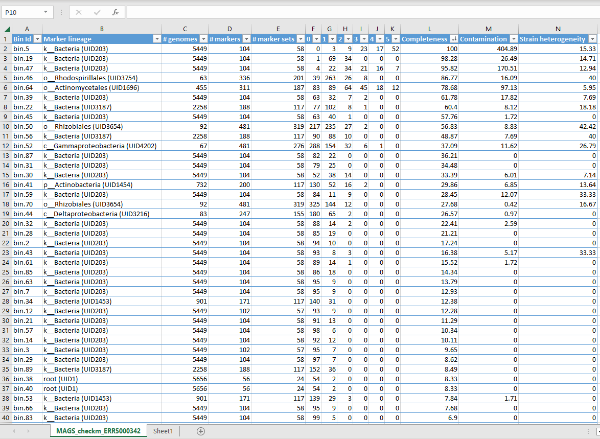

Normalising Abundances and Identifying Gene Families
Quality check
The quality of a metagenome-assembled genome (MAG) or bin is highly dependent on several things:
- the depth of sequencing
- the abundance of the organism in the community
- how successful the assembly was
- how successful the polishing (if used) was
In order to determine the quality of a MAG we can look at two different metrics. These are:
- completeness (i.e. how much of the genome is captured in the MAG?) and
- contamination (i.e. do all the sequences in the MAG belong to the same organism?).
We can use the program CheckM to determine the quality of MAGs. CheckM uses a collection of domain and lineage-specific markers to estimate completeness and contamination of a MAG. This short YouTube video by Dr Robert Edwards explains how CheckM uses a hidden Markov model to calculate the level of contamination and completeness of bins, based on marker gene sets.
CheckM has multiple different workflows available which are appropriate for different datasets. See CheckM documentation on Workflows for more information.
We will be using the lineage-specific workflow here. lineage_wf places your bins in a reference tree to determine which lineage it corresponds to. This allows it to use the appropriate marker genes to estimate quality parameters.
First let’s move into our cs_course folder and make a directory for our CheckM results.
Code
cd ~/cs_course
mkdir results/checkmCheckM has been pre-installed on the instance so we can check the help documentation for the lineage-specific workflow using the -h flag/option.
Code
checkm lineage_wf -husage: checkm lineage_wf [-h] [-r] [--ali] [--nt] [-g] [-u UNIQUE] [-m MULTI]
[--force_domain] [--no_refinement]
[--individual_markers] [--skip_adj_correction]
[--skip_pseudogene_correction]
[--aai_strain AAI_STRAIN] [-a ALIGNMENT_FILE]
[--ignore_thresholds] [-e E_VALUE] [-l LENGTH]
[-f FILE] [--tab_table] [-x EXTENSION] [-t THREADS]
[--pplacer_threads PPLACER_THREADS] [-q]
[--tmpdir TMPDIR]
bin_input output_dir
Runs tree, lineage_set, analyze, qa
positional arguments:
bin_input directory containing bins (fasta format) or path to file describing genomes/genes - tab separated in 2 or 3 columns [genome ID, genome fna, genome translation file (pep)]
output_dir directory to write output files
optional arguments:
-h, --help show this help message and exit
-r, --reduced_tree use reduced tree (requires <16GB of memory) for determining lineage of each bin
--ali generate HMMER alignment file for each bin
--nt generate nucleotide gene sequences for each bin
-g, --genes bins contain genes as amino acids instead of nucleotide contigs
-u, --unique UNIQUE minimum number of unique phylogenetic markers required to use lineage-specific marker set (default: 10)
-m, --multi MULTI maximum number of multi-copy phylogenetic markers before defaulting to domain-level marker set (default: 10)
--force_domain use domain-level sets for all bins
--no_refinement do not perform lineage-specific marker set refinement
--individual_markers treat marker as independent (i.e., ignore co-located set structure)
--skip_adj_correction
do not exclude adjacent marker genes when estimating contamination
--skip_pseudogene_correction
skip identification and filtering of pseudogenes
--aai_strain AAI_STRAIN
AAI threshold used to identify strain heterogeneity (default: 0.9)
-a, --alignment_file ALIGNMENT_FILE
produce file showing alignment of multi-copy genes and their AAI identity
--ignore_thresholds ignore model-specific score thresholds
-e, --e_value E_VALUE
e-value cut off (default: 1e-10)
-l, --length LENGTH percent overlap between target and query (default: 0.7)
-f, --file FILE print results to file (default: stdout)
--tab_table print tab-separated values table
-x, --extension EXTENSION
extension of bins (other files in directory are ignored) (default: fna)
-t, --threads THREADS
number of threads (default: 1)
--pplacer_threads PPLACER_THREADS
number of threads used by pplacer (memory usage increases linearly with additional threads) (default: 1)
-q, --quiet suppress console output
--tmpdir TMPDIR specify an alternative directory for temporary files
Example: checkm lineage_wf ./bins ./outputThis readout tells us what we need to include in the command:
- the
xflag telling CheckM the format of our bins (fa) - the directory that contains the bins (
assembly_ERR5000342.fasta.metabat-bins1500-YYYYMMDD_HHMMSS/) - the directory that we want the output to be saved in (
checkm/) - the
--reduced_treeflag to limit the memory requirements - the
-fflag to specify an output file name/format - the
--tab_tableflag so the output is in a tab-separated format - the
-tflag to set the number of threads used to eight, which is the number we have on our instance
As a result our command looks like this:
Code
checkm lineage_wf -x fa results/binning/assembly_ERR5000342.fasta.metabat-bins1500-YYYYMMDD_HHMMSS/ results/checkm/ --reduced_tree -t 8 --tab_table -f results/checkm/MAGs_checkm.tsv &> results/checkm/checkm.out &(Don’t forget to change YYYYMMDD-HHMMSS to match your directory’s name.)
As always you can check the command’s progress by looking inside the checkm.out file or using jobs (as long as you haven’t logged out of your instance since starting the command running).
When the run ends (it should take around 20 minutes) we can open our results file.
Code
cd results/checkm
less MAGs_checkm.tsvOutput
| Bin Id | Marker lineage | # genomes | # markers | # marker sets | 0 | 1 | 2 | 3 | 4 | 5+ | Completeness | Contamination | Strain heterogeneity |
|--------|----------------------|-----------|-----------|---------------|-----|----|---|---|---|----|--------------|---------------|---------|
| bin.1 | k__Bacteria (UID203) | 5449 | 104 | 58 | 95 | 9 | 0 | 0 | 0 | 0 | 1.79 | 0.00 | 0.00 |
| bin.10 | k__Bacteria (UID203) | 5449 | 104 | 58 | 100 | 4 | 0 | 0 | 0 | 0 | 3.45 | 0.00 | 0.00 |
| bin.11 | root (UID1) | 5656 | 56 | 24 | 56 | 0 | 0 | 0 | 0 | 0 | 0.00 | 0.00 | 0.00 |
| bin.12 | k__Bacteria (UID203) | 5449 | 102 | 57 | 93 | 9 | 0 | 0 | 0 | 0 | 12.28 | 0.00 | 0.00 |
| bin.13 | root (UID1) | 5656 | 56 | 24 | 56 | 0 | 0 | 0 | 0 | 0 | 0.00 | 0.00 | 0.00 |
| bin.14 | k__Bacteria (UID203) | 5449 | 104 | 58 | 92 | 12 | 0 | 0 | 0 | 0 | 10.11 | 0.00 | 0.00 |
| bin.15 | root (UID1) | 5656 | 56 | 24 | 55 | 1 | 0 | 0 | 0 | 0 | 4.17 | 0.00 | 0.00 |Running this workflow is equivalent to running six separate CheckM commands. The CheckM documentation explains this is more detail.
Fill in the blanks to complete the code you need to download the MAGs_checkm.tsv to your local computer using SCP:
Code
scp -i ___ csuser@instanceNNN.cloud-span.aws.york.ac.uk.:___/cs_course/results/checkm/MAGs_checkm.tsv ____In a terminal logged into your local machine type:
Code
scp -i login-key-instanceNNN.pem csuser@instanceNNN.cloud-span.aws.york.ac.uk:~/cs_course/results/checkm/MAGs_checkm.tsv <the destination directory of your choice>How much contamination we can tolerate and how much completeness we need depends on the scientific question being tackled.
To help us, we can use a standard called Minimum Information about a Metagenome-Assembled Genome (MIMAG), developed by the Genomics Standard Consortium. You can read more about MIMAG in this 2017 paper.
As part of the standard, a framework to determine MAG quality from statistics is outlined. A MAG can be assigned one of three different metrics: High, Medium or Low quality draft metagenome assembled genomes.
See the table below for an overview of each category.
| Quality Category | Completeness | Contamination | rRNA/tRNA encoded |
|---|---|---|---|
| High | > 90% | ≤ 5% | Yes (≥ 18 tRNA and all rRNA) |
| Medium | ≥ 50% | ≤ 10% | No |
| Low | < 50% | ≤ 10% | No |
We have already determined the completeness and contamination of each of our MAGs using CheckM. Next we will use a program to determine which rRNA and tRNAs are present in each MAG.
Note that due to the difficulty in the assembly of short-read metagenomes, often just a completeness of >90% and a contamination of ≤ 5% is treated as a good quality MAG.
To best examine your bins, you might want to import it into a spreadsheet software program (you should be able to directly copy and paste the contents of your MAGS_checkm.tsv text file into a spreadsheet without needing to do any further formatting or splitting into columns). Then, you can use “filter” (Google Sheets) or “format as table” (Excel) to sort your bins by completeness and/or contamination.
Google Sheets
- Select the entire top row (containing your headers) of the sheet
- Click the symbol which looks like a funnel in the toolbar at the top (second from the right) or go to Data > Create a filter
- You can now click the inverted pyramid in the header cell of each column to sort/filter the data by the values in that column
Excel
- Select all of the cells containing your data
- From the main Home bar, select ‘Format as Table’ (near the middle of the toolbar) and choose a style. In the popup that appears, make sure ‘My table has headers’ is checked then click OK.
- You can now use the drop down arrow in the header cell of each column to sort/filter the data by the values in that column

Here the bins are sorted by completeness. Completeness is evaluated by looking for the presence of a set of marker genes - 100% complete means all the genes were found. Contamination is determined by the fraction of marker genes that occur as duplicates, indicating that more than one genome is present.
Other columns to consider:
marker lineagetells you what taxa your MAG might belong to (even if this is as broad as just “bacteria” or even “root”)# genomestells you how many genomes were used to generate each marker set (which is based on the marker lineage, so if CheckM couldn’t work out what your MAG was beyond “bacteria” it uses marker genes from 5449 different species)# markerstells you how many markers were needed for the genome to be 100% complete- numbers
0to5+tell you how many times marker genes were identified e.g.0tells you how many markers were not found at all1tells you how many marker were found once only2tells you how many markers were found twice- and so on.
strain heterogeneitytells you how much of the contamination is likely to come from another strain of the same species.
For example, in the CheckM output shown above, Bin 5 is 100% complete. However, it has 400% contamination, meaning the markers were present multiple times instead of just once. Indeed we can see that 52 markers were present 5 or more times, 17 present 4 times etc. The strain heterogeneity is quite low suggesting that this contamination is not due to having several strains of one species present. Likely as a result of this contamination, CheckM was only able to classify the MAG as “Bacteria” and could not be more specific.
Alternatively, Bin 46 is 86.77% complete and only has 16% contamination. We can see that 263 marker genes were present once only - this indicates that this is mostly one genome, with a bit of contamination mixed in. CheckM classified this MAG as belonging to order Rhodospirallales and subsequently used 63 genomes from this lineage to generate the marker sets. It has 40% strain heterogeneity so we can assume that some of the contamination comes from very similar strains being mixed together. This is a much better bin than Bin 5, even though it is ostensibly less complete.
Things to bear in mind
It is important to remember that the “completeness” metric relies on having well-characterised lineages present in CheckM’s database. If the MAG belongs to a poorly-characterised lineage, the results may not be accurate.
You will find that none of our bins satisfy the requirements for a “high quality” bin. That’s okay! Binning is still quite an inexact science and while various tools exist to do the job of binning, all of them need to be taken with a pinch of salt.
So how can you make your bin outputs more reliable? There are ways of combining outputs from different binning tools which can help crosscheck results and refine your bins. You can also try using different parameters, or go back and tweak parameters in the assembly and polishing steps.
Once you have downloaded the MAGs_checkm.tsv file, you can open it in Excel or another spreadsheet program. If you didn’t manage to download the file, or do not have an appropriate program to view it in you can see or download our example file here.
Looking at the results of our quality checks, which MAGs could be classified as medium quality? Use the table above to remind yourself of the quality requirements.
Bins 22, 45 and 50 all have completeness more than or equal to 50%, and contamination below 10%, meaning they can be classed as medium quality.
A much larger number of bins have completeness less than 50% and contamination below 10% (low quality). Notably, bin 56 is 48.9% complete with 7.7% contamination, meaning it comes very close to being classed as medium quality but technically should be considered low quality.
Your bins may have different names/numbers to these but you should still see similar results.